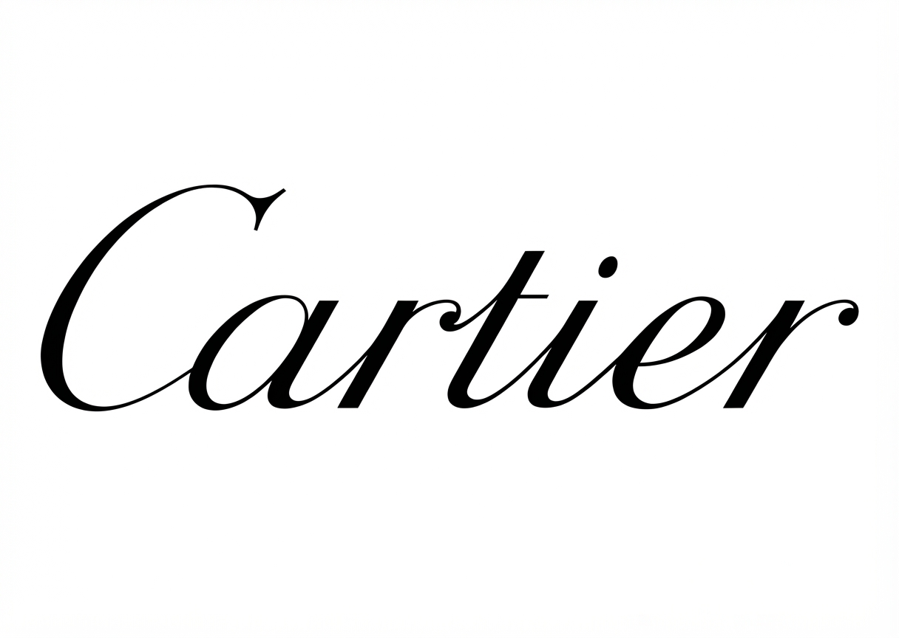
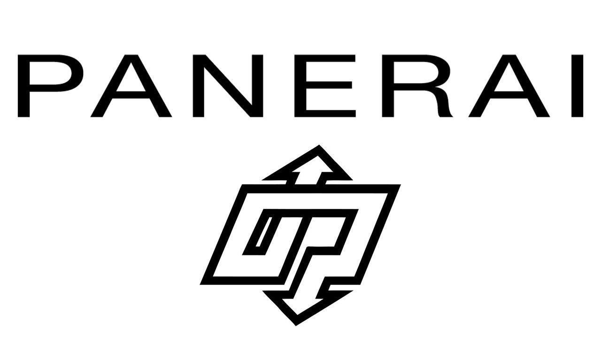
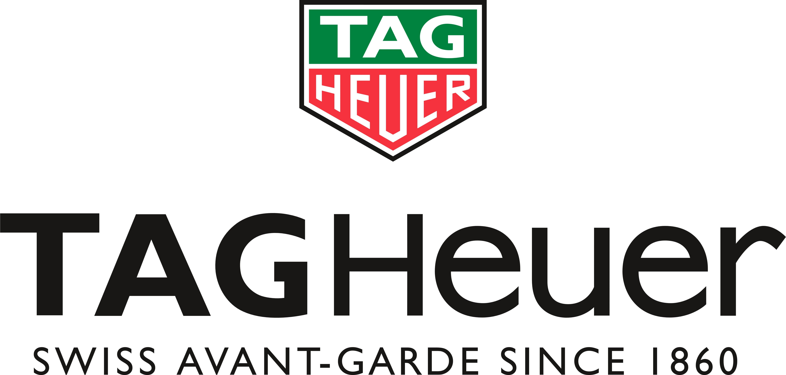

Urmakeri i Malmö
Precision för fina armbandsur
Vi servar, renoverar och restaurerar armbandsur med samma noggrannhet som en gång byggde dem — från vardagsklockan till vintagearvet.
Om oss
Hantverk som mäts i tiondels millimeter
Watch Clinic är en oberoende urmakeriverkstad mitt i Malmö. Under förstoringsglaset möter mångårig erfarenhet en genuin fascination för mekaniska ur — varje fjäder, kugghjul och lager får den tid och uppmärksamhet som krävs för att klockan ska gå rätt, år efter år.
Vi arbetar med allt från vardagsklockor till sällsynta vintageur, och står bakom varje service med samma diskretion och precision som våra kunder förväntar sig av sina klockor.
Brands We Service









Tjänster
Från batteribyte till helrenovering
Ett urval av vad vi hjälper till med i butiken på Amiralsgatan.
Omdömen
Vad kunderna säger
Klockan lämnades in med stor omsorg och kom tillbaka exakt som utlovat — hederligt, noggrant och alltid artigt bemötande.
Imponerande kunnig och samtidigt ödmjuk — jag rekommenderar butiken varmt till vem som helst.
Ett vintageur reparerades till rimligt pris och blev klart tidigare än väntat — ett genuint hantverksmässigt bemötande.
Redo att lämna in klockan?
Berätta vad som behöver göras, så återkommer vi med en tidsbokning och en uppskattning.